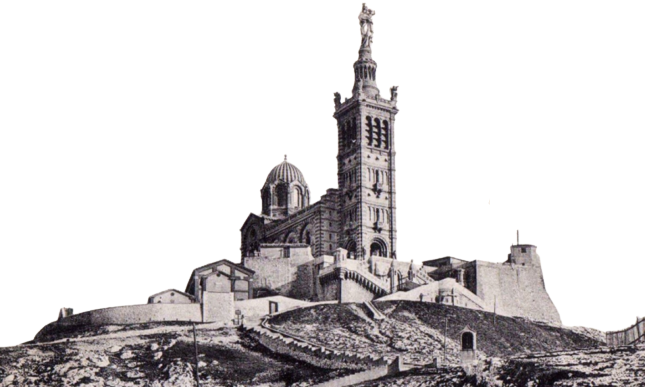
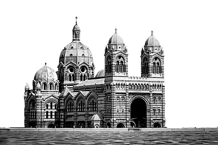
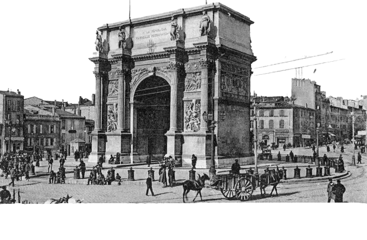
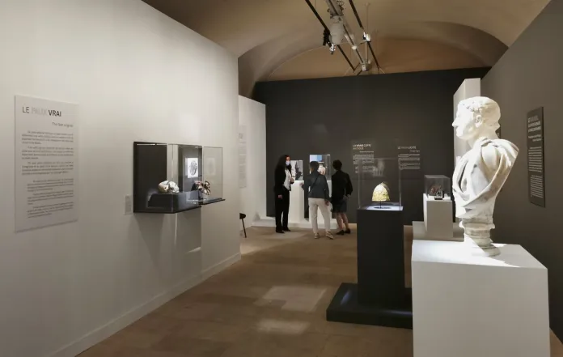
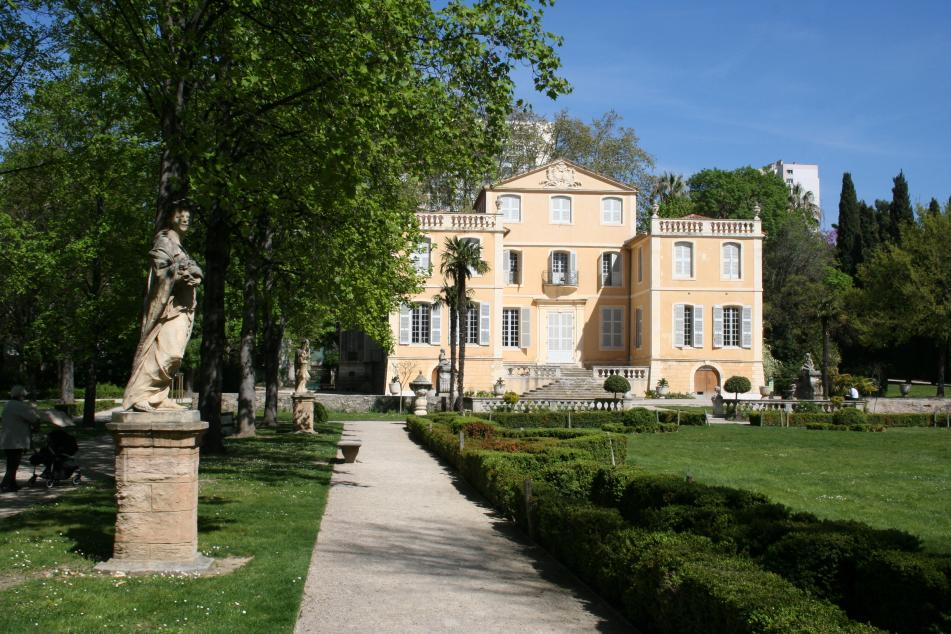

Histoire
La cité phocéenne tire son nom de son histoire, en effet Marseillle fût créer il y a de cela maintenant 2600 ans par des marins grecs de phocée.
Retracer ses 2600 ans d'histoires grâce à ses nombreux monuments, de sa création jusqu'à aujourd'hui.
Plus de détails



Notre-Dame-de-la-Garde
Cathédral de la MAJOR
Porte d'Aix
Musées
Marseille ayant une très grande histoire, elle possède de très nombreux musées qui sont à visiter afin de mieux connaître celle-ci.
Du Mucem au musée des Beaux Arts ou encore le musée des motos, venez découvrir les reliques que Marseille abrite.
Plus de détails -
Palais Longchamp
Protégé au titre des monuments historiques, le parc Longchamp s'est constitué au fil du temps, par la stratification des différents projets, imaginés ou réalisés sur le site, depuis le XIXe siècle.
32 Bd Jard. Zoologique, 13004 Marseille
-
Parc du 26ème Centenaire
Situé en plein cœur de Marseille, le Parc du 26e centenaire s’étend sur 10,5 hectares. Il a été aménagé sur le site de l'ancienne gare du Prado. Lorsqu’en 1998, la Ville de Marseille achète le terrain à la SNCF, il y a longtemps que la gare ne sert plus qu’à la formation des trains transportant les ordures ménagères vers la décharge d’Entressen.
Place Zino Francescatti, 13010 Marseille

-

Parc de la Magalone
Au cœur du très chic boulevard Michelet se cache le Jardin de la Magalone. C’est ce genre de lieux que les habitants du coin essaient tant bien que mal de garder secret sans pouvoir pour autant résister au fait de le partager.
245 Bd Michelet, 13009 Marseille
Plages
La ville dispose de plusieurs endroits parfaits pour les baignades en famille, en solo ou entre amis.
Marseille étant en bord de mer, ses nombreuses plages sauront vous émerveiller. Entre la plage du Prado, celles des calanques ou encore d'autres moins connu, profiter des plages qu'elle propose.
Plus de détailsRandonnées
En plus de ses merveilleuses plages, Marseille est entourée de magnifiques montagnes à explorer.
De Luminy à Cassis ou bien encore du côté de Marseilleveyre, venez explorer les calanques de Marseille.
Plus de détails